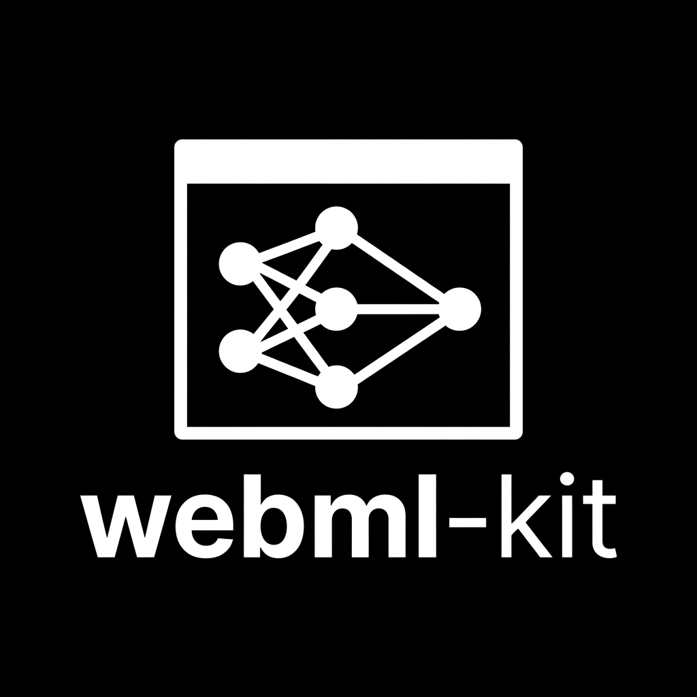

webml-kit v0.3.0
Speech Recognition
Ready
Auto-resamples to 16kHz mono. Chunks audio directly to in-browser Whisper.
Hello! I am running locally in your browser with WebGPU. Ask me anything.
0 tok/s · TTFT: 0ms
Click to upload or pick a preset:


Generates raw Float32Array waveform samples and plays via Web Audio API.
webml() code